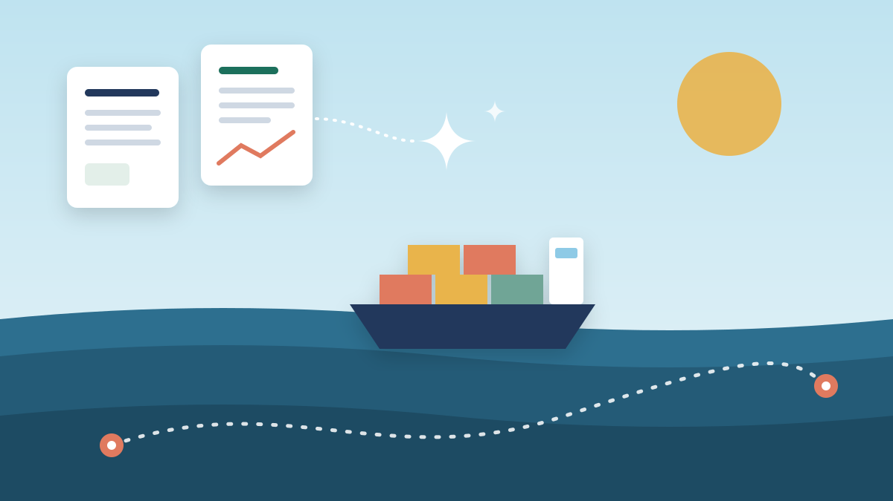
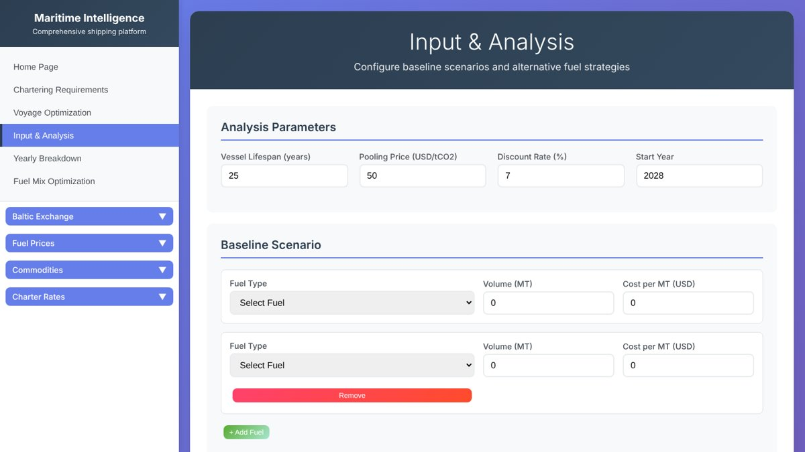
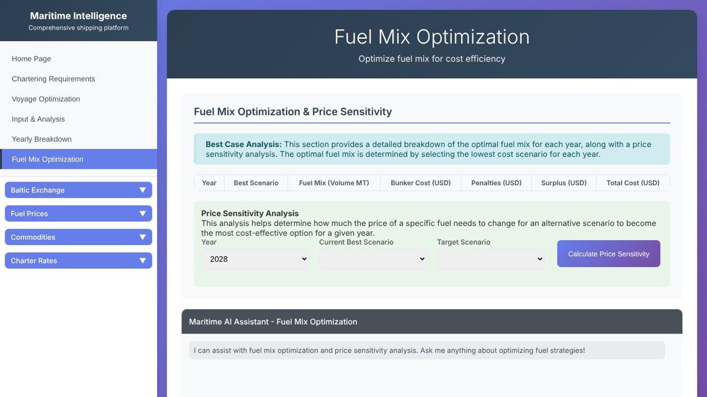

ARROW: Maritime Intelligence Platform
A shipbroking platform that pairs an AI market briefing (RAG) with route optimisation and fuel-strategy analysis.
- My role
- Built the retrieval-augmented generation (RAG) pipeline
- Team
- Team project with peers
- When
- 2025

Overview
Shipbrokers negotiate fixtures between shipowners and charterers using regulations, market reports and route knowledge scattered across dozens of documents. For the ARROW case competition our team built a web platform that brings this together: define a cargo and route, plan the voyage, compare fuel strategies, and get an AI-written market briefing grounded in real regulatory and market documents.
My part was the RAG pipeline behind the briefings and the AI assistant, which answers questions using only information drawn from the document library.
The process at a glance
-
Problem
- Brokers juggle regulations, reports and routes
- Information scattered across many documents
-
Knowledge base
- 15 regulatory and market PDFs
- Port and war-zone data
- Fuel price inputs
-
RAG pipeline (my part)
- Chunk and embed (MiniLM)
- Chroma vector store
- Retrieve by voyage inputs
- Mistral-7B writes the briefing
-
Platform
- Flask API in Docker
- Web dashboard
- AI chat assistant
-
Optimisers
- 3,789 sea routes ranked
- Fuel strategy ROI
-
Output
- 800–900-word broker briefing
- Source documents listed
What I did
- Indexed a library of 15 maritime documents (SOLAS, MARPOL, the ISM and ISPS codes, BIMCO charter parties, ISO 8217 fuel standards and Veson market reports) into a Chroma vector store using all-MiniLM-L6-v2 sentence embeddings.
- Retrieved the most relevant passages for each voyage's inputs (ports, cargo, fuel type and laycan dates) and listed the source documents alongside each answer.
- Prompted Mistral-7B-Instruct (via Hugging Face) to write a structured 800–900-word broker briefing covering route risks, cargo market conditions, fuel and compliance costs, negotiation leverage and valuation ranges, using only the retrieved context.
- Served the pipeline as a Flask API, packaged with Docker, that feeds the platform's dashboard and chat assistant.
- The team's route optimiser generated 3,789 candidate sea routes between export and import ports (direct and via hub ports), flagged high-risk war zones and ranked routes by distance, port charges and expected demurrage.
- The fuel-strategy module compares a baseline fuel mix with alternative fuels and energy-saving devices over a vessel's life, including carbon pooling prices, discounting, ROI and price sensitivity.
Results & conclusions
- End-to-end prototype: web dashboard, RAG briefing API and route optimiser working together
- Every briefing lists the regulatory and market documents it draws from, so brokers can check each claim
- 3,789 pre-computed routes, mapped interactively with Folium
| Component | Choice | Why |
|---|---|---|
| Embedding model | all-MiniLM-L6-v2 | Small and fast, good semantic search quality |
| Vector store | ChromaDB (persistent) | Search by meaning; stays on disk between runs |
| Language model | Mistral-7B-Instruct v0.3 | Open-source, runs through the Hugging Face API |
| Temperature | 0.3 | Keeps answers factual rather than creative |
| Max output | 1,500 tokens | Room for an 800–900-word structured briefing |
| Grounding rule | Answer only from retrieved context | Prevents made-up facts |
| Module | What it does | Built with |
|---|---|---|
| Market briefing (RAG) | Writes a negotiation briefing for a route and cargo | LangChain, ChromaDB, Mistral-7B, Flask |
| Route optimiser | Ranks routes by distance, port costs and war-zone risk | searoute, Shapely, Folium |
| Fuel strategy | Compares fuel and retrofit scenarios with ROI and DCF | JavaScript, Chart.js |
| Market sidebar | Shows Baltic indices, fuel prices and charter rates | JavaScript |
Conclusion
The prototype showed that a small open-source model can produce useful, trustworthy briefings when retrieval does the heavy lifting. Because Mistral-7B was restricted to the retrieved passages and every answer lists its sources, each claim in a briefing can be traced back to the regulation or market report it came from. Together with route ranking and fuel-strategy analysis, the platform covers the main questions a broker asks before negotiating a fixture.
What I learnt
This was my first time building a RAG system end to end. I learnt that answer quality depends far more on what you retrieve than on the model itself: how documents are split into chunks, which inputs you search with, and how strictly the prompt keeps the model within its context. I also picked up practical engineering habits, like keeping API keys out of the code, packaging a service in Docker so teammates can run it, and designing an API that a front end built by someone else can call. Working on one part of a larger team system taught me to agree on interfaces early.
Gallery



